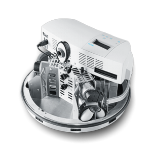

Teams of robots have to transport semi-finished products from machine to
machine in order to produce some final product according to some production
plan. Machines can break down, products may have inferior quality,additional
important orders come in and need to be machined at ahigher priority. Due to
increasing demands for flexibility production facilities will become dynamic
environments, where shop floor layoutsand the number, location and type of the
engaged machinery change constantly. The robots therefore need to be able to
identify these machines either visually or by direct communication. For the
LLSF, a team consisting of up to three robots starts in the game area of about
5.6m x 5.6m. A number of semi-finished products is represented by RFID-tagged
pucks. Each is in a particular state, from raw material through
intermediate steps to being a final product. The state cannot be read by the
robot but must be tracked and communicated among the robots of a team. On the
playing field are machines, RFID devices with a signal light indicating
their processing status. When placed on a proper machine type, a puck changes
its state according to the machine specification which is communicated via
broadcast messages. The outcome and machine state is indicated by particular
light signals. During the game a number of different semi-finished products
need to be produced with ten machines on the playing field. Orders are posted
to the robots requesting particular final products to be delivered to specific
delivery gates and in specified time slots. All teams use the same robot base,
a Festo Robotino which may be equipped with additional sensor devices and
computing power, but only within certain limits.
